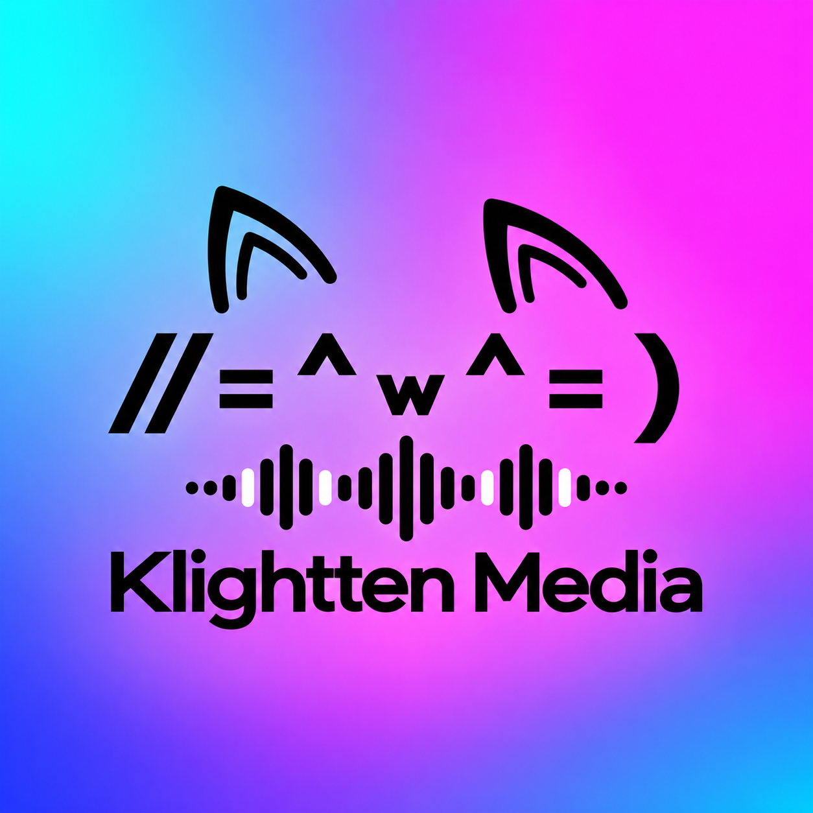

Music
An ArchiveTune-inspired music workflow for songs, artists, albums, playlists, favorites, history and queue.
Music, YouTube, local files, ani-cli, MPV playback and FFmpeg conversion — organized into one focused desktop experience instead of a pile of separate tools.

The Media identity keeps the approved black cat mark and black-white reading waveform on a Neon-Arcade background, while the interface can switch across the five canonical KLIGHTTEN themes.
Version 3.1 restores the persistent Media Control Panel and Now Playing workspace, makes Floating Video manual-only, and applies the five canonical KLIGHTTEN themes across the full desktop experience.
An ArchiveTune-inspired music workflow for songs, artists, albums, playlists, favorites, history and queue.
One clean Local workspace for music and video files stored directly on your Linux computer.
A normal keyboard-driven in-app terminal with native MPV handoff for episode playback.
A persistent Qt WebEngine/Chromium browser for normal YouTube videos, channels, playlists, searches and account pages.
Convert files already on your computer to MP3 or MP4 with FFmpeg. No downloader/ripping module is included.
Dark-Mint, Neon-Arcade, Black-White, Crimson-Red and Cream Coffee — the five canonical KLIGHTTEN themes.
You no longer need to choose between several local player engines. KLIGHTTEN routes media to the compatible playback path automatically.
Shortcuts are disabled while typing in text fields or using the ani-cli terminal.
You can use KLIGHTTEN MEDIA without connecting Google. If you choose to connect YouTube, the app requests read-only access for the connected-account features shown inside the app.